以下是可以在122.0.65.73 23333端口使用的先行卡的列表。下载补丁后即可使用。
使用方法：原版游戏下载补丁后解压至游戏文件夹，手机党请自定义数据库（方法请查看压缩包内使用说明），暂不支持游侠版游戏，静水版游戏无需使用。
资料来源：任天堂世界论坛，@Solari_28。
脚本作者：YGOPRO，ygohack137，SalvationDevelopment，Ygopro.co，Eerie Code，以及其他公开发布的先行卡脚本的作者。
星星图标是Yusuke Kamiyamane的作品。
数据整理：Loki。
提示：电脑上安装本次补丁前，请先删除expansions文件夹，否则会出现卡片重复的现象。
更新记录
- 2016-03-04 22:09
- 修复：强袭黑羽-五月雨之骚速刀鸟「强袭黑羽」字段问题。
- 2016-03-04 21:22
- 新卡：炼装勇士·银鸟、卡通黑魔术师、强袭黑羽-五月雨之骚速刀鸟。脚本来自nekrozar。
- 修复：黑幻想之魔术师3效果能多次发动的问题。
- 修复：炼装勇士·山铜直接攻击时出现错误的问题。
- 修复：从手卡发动台风等卡时也会触发虚空之黑魔导师的问题。
- 修复：超河马狂欢节不能召唤衍生物的问题。
- 2016-02-29 18:36
- 修复：调节口香糖2效果不能发动的问题。
- 2016-02-29 12:52
- 修复：调节口香糖未被视为取对象的问题。
- 修复：不知火的隐者在有场地时也只能特殊召唤一只怪兽的问题。
- 2016-02-29 00:04
- 修复：不知火的隐者被除外时无法特殊召唤怪兽的问题。
- 2016-02-28 18:20
- 新卡：调节口香糖，超河马狂欢节。脚本来自nekrozar。
- 更新：部分卡片至最新版脚本。脚本来自nekrozar。
- 2016-02-26 21:53
- 修复：娱乐伙伴 机械眼蜥蜴不应为同名卡一回合一次。
- 修复：黑羽-胧影之业风应能除外多张卡。
- 修复：不知火的隐者效果处理时场上没有空位时工作不正常的情况。
- 修复：破坏剑的追忆场上没有空位时也能发动的问题。
- 2016-02-25 22:50
- 新卡：红莲狼、不知火的隐者等TDIL(909?)新卡7张。部分脚本来自ygohack137和Kone。
- 更新：更换部分清晰卡图。
- 2016-02-25 10:34
- 修复：黑魔导阵在卡组不足3张时也能发动的问题。
- 修复：虚空之黑魔导师能在自己回合从手卡发动陷阱的问题。
- 修复：娱乐伙伴 国王熊精只在战斗时上升攻击力的问题。
- 修复：精灵圣剑士直接攻击时不能抽卡的问题。
- 2016-02-22 03:06
- 修复：黑幻想之魔术师应为1速效果，在连锁处理完后发动（参考凤凰剑圣）。修复自己的卡片发动被对方连锁后这张卡不能发动的问题。
- 修复：娱乐伙伴 电话长角牛能拿娱乐伙伴魔法陷阱卡的问题。
- 2016-02-20 22:33
- 修复：黑魔导阵、虚空之黑魔导师、炼装融合提示出现问号的问题。
- 2016-02-20 20:33
- 修复：黑魔导阵在卡组中没有幻像魔法时工作不正常的问题。
- 2016-02-20 19:31
- 修复：黑魔导阵、幻像魔法未被视为记载了「黑魔术师」的卡的问题。
- 修复：黑魔导阵被破坏仍会处理效果的问题。
- 修复：幻像魔法发动被无效后不能再发动的问题。
- 修复：魔术师的导门阵无视召唤条件的问题。
- 修复：娱乐伙伴 合唱鹦鹉另一边有同名卡也可以发动的问题。
- 修复：娱乐伙伴 跷跷板蝗虫效果处理时失去对象不会送去墓地的问题。
- 修复：娱乐伙伴表演结束效果无效的问题。
- 2016-02-19 23:27
- 新卡：ST16新卡7张，TDIL(909?)新卡13张。部分脚本来自EerieCode、dest、ygohack137。
- 2016-02-18 00:14
- 更新：删除已经正式更新的卡。
- 修复：精灵圣剑士不识别「精灵剑士」系列卡的问题。
- 2016-02-11 13:52
- 修复：辉神鸟 贝努鸟攻击力应为2800。
- 2016-02-11 13:46
- 新卡：温火鸡、鬼牛肉、鬼签。脚本来自nekrozar。DF16全卡已更新。
- 修复：原初的叫唤无法发动的问题。
- 2016-02-11 00:26
- 新卡：辉神鸟 贝努鸟、原初的叫唤、娱乐伙伴 手艺魔术家、娱乐伙伴戏剧剧场。辉神鸟 贝努鸟、原初的叫唤脚本来自Eerie Code。
- 更新：删除已经正式更新的卡。
- 2016-02-06 14:22
- 新卡：创世之龙骑士。脚本来自Eerie Code。
- 修复：破灭龙 甘多拉X生命值减半效果在准备阶段也会发动的问题。
- 修复：弧光勇烈龙和巨神龙 闪耀不增加守备力的问题。
卡片列表
| 卡图 | 卡名 | 效果 |
|---|---|---|
| 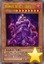 | 邪神官 契伦·沙巴 | [怪兽|效果] 爬虫类/暗 [★8] 2500/0 「邪神官 契伦·沙巴」的②的效果1回合只能使用1次。 ①：自己手卡是5张以上的场合，这张卡可以不用解放作召唤。 ②：这张卡被战斗破坏送去墓地时才能发动。这张卡从墓地守备表示特殊召唤。这个效果特殊召唤的这张卡当作调整使用。 |
| 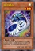 | 银河蠕虫 | [怪兽|效果] 昆虫/光 [★3] 1200/1000 ①：这张卡召唤成功时，自己场上没有这张卡以外的怪兽存在的场合才能发动。从卡组把1只3星以下的「银河」效果怪兽特殊召唤。这个效果特殊召唤的怪兽的效果无效化。 |
| 破灭龙 甘多拉X | [怪兽|效果] 龙/暗 [★8] 0/0 ①：这张卡从手卡的召唤·特殊召唤成功时才能发动。这张卡以外的场上的怪兽全部破坏，给与对方破坏的怪兽之内攻击力最高的怪兽的攻击力数值的伤害。这张卡的攻击力变成和这个效果给与对方的伤害相同数值。 ②：自己结束阶段发动。自己基本分变成一半。 | |
| 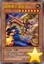 | 暗黑骑士 盖亚王 | [怪兽|效果] 战士/地 [★7] 2300/2100 ①：对方场上有怪兽存在，自己场上没有怪兽存在的场合，这张卡可以从手卡特殊召唤。 ②：1回合1次，比这张卡攻击力高的怪兽在对方场上特殊召唤的场合才能发动。这张卡的攻击力直到回合结束时上升700。 |
| 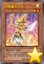 | 柠檬魔术少女 | [怪兽|效果] 魔法师/光 [★2] 800/600 ①：1回合1次，把「柠檬魔术少女」以外的自己场上1只「魔术少女」怪兽解放才能发动。从卡组把1只魔法师族怪兽加入手卡。 ②：1回合1次，这张卡被选择作为攻击对象的场合才能发动。从手卡把1只魔法师族怪兽效果无效特殊召唤。那之后，攻击对象转移为那只怪兽，攻击怪兽的攻击力变成一半。 |
| 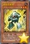 | 精灵圣剑士 | [怪兽|效果] 战士/地 [★4] 2100/700 这张卡在规则上也当作「精灵剑士」卡使用。 ①：自己手卡是1张以上的场合，这张卡不能攻击。 ②：1回合1次，自己主要阶段才能发动。从手卡把1只「精灵剑士」怪兽特殊召唤。 ③：这张卡的攻击给与对方战斗伤害时才能发动。自己从卡组抽出自己场上的「精灵剑士」怪兽的数量。 |
 | 古生物 林乔利虫 | [陷阱] ①：以除外的1张自己或者对方的卡为对象才能发动。那张卡回到墓地。 ②：场上的陷阱卡发动时，连锁那个发动这个效果才能从墓地发动。这张卡变成通常怪兽（水族·水·2星·攻1200/守0）在怪兽区域特殊召唤（不当作陷阱卡使用）。这个效果特殊召唤的这张卡不受怪兽的效果影响，从场上离开的场合除外。 |
| 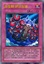 | 古生物 伊尔东钵 | [陷阱] ①：以场上1只表侧表示怪兽为对象才能发动。那只怪兽的攻击力·守备力直到回合结束时上升500。 ②：场上的陷阱卡发动时，连锁那个发动这个效果才能从墓地发动。这张卡变成通常怪兽（水族·水·2星·攻1200/守0）在怪兽区域特殊召唤（不当作陷阱卡使用）。这个效果特殊召唤的这张卡不受怪兽的效果影响，从场上离开的场合除外。 |
| 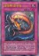 | 古生物 皮卡虫 | [陷阱] ①：从手卡丢弃1张「古生物」卡。那之后，自己从卡组抽2张。 ②：场上的陷阱卡发动时，连锁那个发动这个效果才能从墓地发动。这张卡变成通常怪兽（水族·水·2星·攻1200/守0）在怪兽区域特殊召唤（不当作陷阱卡使用）。这个效果特殊召唤的这张卡不受怪兽的效果影响，从场上离开的场合除外。 |
| 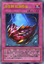 | 古生物 拟油栉虫 | [陷阱] ①：以场上1张魔法·陷阱卡为对象才能发动。那张卡破坏。 ②：场上的陷阱卡发动时，连锁那个发动这个效果才能从墓地发动。这张卡变成通常怪兽（水族·水·2星·攻1200/守0）在怪兽区域特殊召唤（不当作陷阱卡使用）。这个效果特殊召唤的这张卡不受怪兽的效果影响，从场上离开的场合除外。 |
| 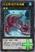 | 古生物 欧巴宾海蝎 | [怪兽|效果|超量] 水/水 [☆2] 0/2400 2星怪兽×2 「古生物 欧巴宾海蝎」的③的效果1回合只能使用1次。 ①：这张卡不受其他怪兽的效果影响。 ②：只要这张卡在怪兽区域存在，自己的「古生物」陷阱卡的发动从手卡也能用。 ③：这张卡有陷阱卡在作为超量素材的场合，把这张卡1个超量素材取除才能发动。从卡组把1张「古生物」陷阱卡加入手卡。 |
| 古生物 足杯虫 | [陷阱] ①：以场上1张表侧表示的卡为对象才能发动。丢弃1张手卡，作为对象的卡除外。 ②：场上的陷阱卡发动时，连锁那个发动这个效果才能从墓地发动。这张卡变成通常怪兽（水族·水·2星·攻1200/守0）在怪兽区域特殊召唤（不当作陷阱卡使用）。这个效果特殊召唤的这张卡不受怪兽的效果影响，从场上离开的场合除外。 | |
| 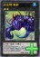 | 古生物 奇虾 | [怪兽|效果|超量] 水/水 [☆2] 2400/0 2星怪兽×3只以上 ①：这张卡不受其他怪兽的效果影响。 ②：1回合1次，自己的魔法与陷阱区域的陷阱卡被送去墓地的场合才能发动。自己卡组最上面的卡翻开，那是陷阱卡的场合，加入手卡。不是的场合，送去墓地。 ③：这张卡有陷阱卡在作为超量素材的场合，1回合1次，把这张卡1个超量素材取除，以场上1张卡为对象才能发动。那张卡破坏。这个效果在对方回合也能发动。 |
| 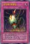 | 古生物 怪诞虫 | [陷阱] ①：以场上1只表侧表示怪兽为对象才能发动。那只怪兽的攻击力·守备力直到回合结束时变成一半。 ②：场上的陷阱卡发动时，连锁那个发动这个效果才能从墓地发动。这张卡变成通常怪兽（水族·水·2星·攻1200/守0）在怪兽区域特殊召唤（不当作陷阱卡使用）。这个效果特殊召唤的这张卡不受怪兽的效果影响，从场上离开的场合除外。 |
| 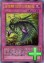 | 古生物 马尔三叶形虫 | [陷阱] ①：从卡组把1张陷阱卡送去墓地。 ②：场上的陷阱卡发动时，连锁那个发动这个效果才能从墓地发动。这张卡变成通常怪兽（水族·水·2星·攻1200/守0）在怪兽区域特殊召唤（不当作陷阱卡使用）。这个效果特殊召唤的这张卡不受怪兽的效果影响，从场上离开的场合除外。 |
| 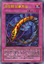 | 古生物 加拿大虫 | [陷阱] ①：以对方场上1只表侧表示怪兽为对象才能发动。那只怪兽变成里侧守备表示。 ②：场上的陷阱卡发动时，连锁那个发动这个效果才能从墓地发动。这张卡变成通常怪兽（水族·水·2星·攻1200/守0）在怪兽区域特殊召唤（不当作陷阱卡使用）。这个效果特殊召唤的这张卡不受怪兽的效果影响，从场上离开的场合除外。 |
| 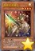 | 创世之龙骑士 | [怪兽|效果] 龙/光 [★4] 1800/600 「创世之龙骑士」的③的效果1回合只能使用1次。 ①：只要这张卡在怪兽区域存在，这张卡的等级在对方回合内上升4星。 ②：这张卡战斗破坏对方怪兽送去墓地时才能发动。从卡组把1只7·8星的龙族怪兽送去墓地。 ③：把1张手卡送去墓地，以自己墓地1只7·8星的龙族怪兽为对象才能发动。这张卡送去墓地，作为对象的怪兽特殊召唤。 |
| 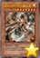 | 娱乐伙伴 手艺魔术家 | [怪兽|效果] 魔法师/光 [★7] 2500/2000 ①：这张卡可以把灵摆怪兽以外的自己场上1只「娱乐伙伴」怪兽解放从手卡特殊召唤。 ②：1回合1次，丢弃1张手卡，以场上1张表侧表示的卡为对象才能发动。那张卡破坏。 |
| 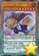 | 娱乐伙伴 国王熊精 | [怪兽|效果|灵摆] 兽战士/地 [★6] 2200/1000 7/7 ←7 【灵摆】 7→ ①：这张卡发动的回合的结束阶段才能发动。这张卡破坏，从自己的额外卡组的表侧表示的灵摆怪兽以及自己墓地的怪兽之中选1只7星以上的怪兽加入手卡。 【怪兽效果】 ①：攻击表示的这张卡不会被魔法·陷阱卡的效果破坏。 ②：这张卡的攻击力在自己战斗阶段内上升自己场上的「娱乐伙伴」卡数量×100。 |
| 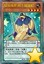 | 娱乐伙伴 秋千眼镜蛇 | [怪兽|效果|灵摆] 爬虫类/地 [★4] 300/1800 2/2 ←2 【灵摆】 2→ ①：1回合1次，自己怪兽给与对方战斗伤害时才能发动。对方卡组最上面的卡送去墓地。 【怪兽效果】 ①：这张卡可以直接攻击。 ②：这张卡攻击的场合，战斗阶段结束时变成守备表示。 |
| 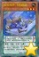 | 娱乐伙伴 飞毯鼯鼠 | [怪兽|效果|反转|灵摆] 兽/地 [★3] 1000/100 7/7 ←7 【灵摆】 7→ ①：另一边的自己的灵摆区域没有卡存在的场合这张卡破坏。 ②：只要这张卡在灵摆区域存在，自己受到的战斗伤害变成一半。 【怪兽效果】 ①：这张卡反转的场合，以场上盖放的1张卡为对象才能发动。那张卡破坏。 ②：这张卡特殊召唤成功的场合才能发动。这张卡变成里侧守备表示。 |
| 娱乐伙伴 合唱鹦鹉 | [怪兽|效果|灵摆] 鸟兽/风 [★3] 500/500 2/2 ←2 【灵摆】 2→ ①：1回合1次，另一边的自己的灵摆区域有「娱乐伙伴 合唱鹦鹉」以外的「娱乐伙伴」卡、「魔术师」卡、「异色眼」卡之内任意种存在的场合才能发动。这张卡的灵摆刻度直到回合结束时变成7。 【怪兽效果】 ①：这张卡被战斗破坏时才能发动。从卡组把灵摆怪兽以外的1只「娱乐伙伴」怪兽特殊召唤。 | |
| 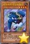 | 娱乐伙伴 电话长角牛 | [怪兽|效果] 兽/地 [★4] 1600/1200 「娱乐伙伴 电话长角牛」的效果1回合只能使用1次。 ①：这张卡特殊召唤成功的场合才能发动。从卡组把灵摆怪兽以外的1只「娱乐伙伴」怪兽加入手卡。 |
| 娱乐伙伴表演结束 | [陷阱] ①：以最多有自己场上的表侧表示的魔法卡数量的对方场上的表侧表示怪兽为对象才能发动。那些怪兽变成里侧守备表示。 | |
| 娱乐伙伴 跷跷板蝗虫 | [怪兽|效果] 昆虫/地 [★4] 100/1200 「娱乐伙伴 跷跷板蝗虫」的③的效果1回合只能使用1次。 ①：特殊召唤的这张卡1回合只有1次不会被战斗破坏。 ②：对方结束阶段以自己墓地1只3星以下的「娱乐伙伴」怪兽为对象才能发动。这张卡送去墓地，那只怪兽加入手卡。 ③：这张卡在墓地存在的状态，「娱乐伙伴」怪兽从手卡送去自己墓地的场合才能发动。这张卡从墓地特殊召唤。 | |
| 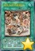 | 娱乐伙伴戏剧剧场 | [魔法|场地] ①：自己场上的怪兽的攻击力上升自己场上的怪兽的种族种类×200。 ②：1回合1次，自己场上的「娱乐伙伴」怪兽的种族是4种类的场合才能发动。从自己的手卡·卡组·墓地选1只「异色眼」怪兽特殊召唤。 |
| 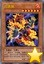 | 红莲狼 | [怪兽|效果] 恶魔/炎 [★6] 1400/2200 ①：自己对「共鸣者」怪兽的召唤成功时才能发动。这张卡从手卡特殊召唤。这个效果特殊召唤的这张卡的攻击力变成一半。 |
| 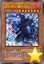 | 黑幻想之魔术师 | [怪兽|效果] 魔法师/暗 [★7] 2100/2500 「黑幻想之魔术师」的①③的效果1回合各能使用1次。 ①：自己在对方回合把魔法·陷阱卡的效果发动的场合才能发动。这张卡从手卡特殊召唤。 ②：这张卡只要在怪兽区域存在，卡名当作「黑魔术师」使用。 ③：只在这张卡在场上表侧表示存在才有1次，自己把魔法·陷阱卡的效果发动的场合以自己墓地1只「黑魔术师」为对象才能发动。那只怪兽特殊召唤。 |
| 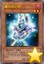 | 魔术师之袍 | [怪兽|效果] 魔法师/暗 [★2] 700/2000 「魔术师之袍」的①②的效果1回合各能使用1次。 ①：对方回合从手卡丢弃1张魔法·陷阱卡才能发动。从卡组把1只「黑魔术师」特殊召唤。 ②：这张卡在墓地存在的状态，对方回合自己把魔法·陷阱卡的效果发动的场合才能发动。这张卡从墓地特殊召唤。这个效果特殊召唤的这张卡从场上离开的场合除外。 |
| 魔术师之杖 | [怪兽|效果] 魔法师/暗 [★3] 1600/100 「魔术师之杖」的①②的效果1回合各能使用1次。 ①：这张卡召唤成功时才能发动。把有「黑魔术师」的卡名记述的1张魔法·陷阱卡从卡组加入手卡。 ②：这张卡在墓地存在的状态，自己在对方回合把魔法·陷阱卡的效果发动的场合，把自己场上1只魔法师族怪兽解放才能发动。墓地的这张卡加入手卡。 | |
| 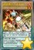 | 炼装勇士·铁人钢 | [怪兽|通常|灵摆] 念动力/炎 [★2] 0/2100 8/8 ←8 【灵摆】 8→ ①：1回合1次，以这张卡以外的自己场上1张表侧表示的卡为对象才能发动。那张卡破坏，从卡组选1张「炼装」魔法·陷阱卡在自己场上盖放。 【怪兽描述】 当隐藏于黑铁机身中的灵魂觉醒过来之时，钢铁将升华至秘金属并成为人机一体的勇士。令那刻于身躯的魂钢燃烧起来吧！——炼装融合！！ |
| 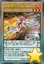 | 炼装勇士·银鸟 | [怪兽|通常|灵摆] 念动力/炎 [★3] 1700/100 1/1 ←1 【灵摆】 1→ ①：1回合1次，以这张卡以外的自己场上1张表侧表示的卡为对象才能发动。那张卡破坏，从卡组选1张「炼装」魔法·陷阱卡在自己场上盖放。 【怪兽描述】 （凡骨） |
| 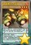 | 炼装勇士·金驰 | [怪兽|通常|灵摆] 念动力/炎 [★4] 1900/500 1/1 ←1 【灵摆】 1→ ①：1回合1次，以这张卡以外的自己场上1张表侧表示的卡为对象才能发动。那张卡破坏，从卡组选1张「炼装」魔法·陷阱卡在自己场上盖放。 【怪兽描述】 闪耀着黄金车身的光芒，以豪爽的漂移跑法横扫敌军。尽管经常都很夸张地出现侧滑失控，但本人坚定立场地表示那就是必杀技。 |
| 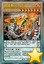 | 炼装勇士·钨火 | [怪兽|通常|灵摆] 念动力/炎 [★7] 2400/2000 8/8 ←8 【灵摆】 8→ ①：1回合1次，以这张卡以外的自己场上1张表侧表示的卡为对象才能发动。那张卡破坏，从卡组选1张「炼装」魔法·陷阱卡在自己场上盖放。 【怪兽描述】 拥有赤热魂钢的上级战士。就在与将世界带向终结的红色恶龙这威胁对峙的时候，他得到仿佛彼此呼应而穿越次元出现的光之意志引导，使身披百炼钢甲之术迎来了绽放时刻。 |
| 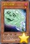 | 调节口香糖 | [怪兽|效果|调整] 恶魔/暗 [★1] 400/1200 「调节口香糖」的①的效果1回合只能使用1次。 ①：以自己场上1只表侧表示怪兽为对象才能发动。这个回合，那只表侧表示怪兽当作调整使用。这个效果发动的回合，自己不用同调怪兽不能攻击。 ②：只以自己场上的同调怪兽1只为对象的魔法·陷阱·怪兽的效果发动时，把墓地的这张卡除外才能发动。那个发动无效。 |
| 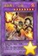 | 炼装勇士·山铜 | [怪兽|效果|融合] 念动力/炎 [★8] 2800/2200 「炼装」怪兽×2 ①：自己的「炼装」怪兽向守备表示怪兽攻击的场合，给与对方为攻击力超过那个守备力的数值的2倍数值的战斗伤害。 ②：这张卡从场上送去墓地的场合，以场上1张卡为对象才能发动。那张卡破坏。 |
| 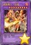 | 炼装勇士·日绯 | [怪兽|融合] 念动力/炎 [★9] 3000/3000 「炼装」怪兽＋攻击力3000以下的怪兽×2 |
| 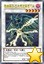 | 强袭黑羽-五月雨之骚速刀鸟 | [怪兽|效果|同调] 鸟兽/暗 [★5] 1500/2000 调整＋调整以外的怪兽1只以上 「强袭黑羽-五月雨之骚速刀鸟」的②③的效果1回合各能使用1次。 ①：「黑羽」怪兽为素材作同调召唤的这张卡当作调整使用。 ②：这张卡同调召唤成功时，以自己墓地1只「强袭黑羽」怪兽为对象才能发动。那只怪兽特殊召唤。 ③：这张卡被送去墓地的回合的自己主要阶段把这张卡以外的自己墓地1只「强袭黑羽-五月雨之骚速刀鸟」除外才能发动。这张卡特殊召唤。 |
| 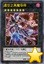 | 虚空之黑魔导师 | [怪兽|效果|超量] 魔法师/暗 [☆7] 2300/2800 魔法师族7星怪兽×2 ①：只要持有超量素材的这张卡在怪兽区域存在，自己在对方回合可以把速攻魔法卡以及陷阱卡从手卡发动。那个发动之际把这张卡1个超量素材取除。 ②：超量召唤的这张卡被对方的效果送去墓地的场合或者被战斗破坏送去墓地的场合才能发动。从手卡·卡组把1只魔法师族·暗属性怪兽特殊召唤。那之后，可以选场上1张卡破坏。 |
| 超河马狂欢节 | [魔法|速攻] ①：从自己的手卡·卡组·墓地选1只「娱乐伙伴 探寻河马」特殊召唤。那之后，可以在自己场上把「河马衍生物」（兽族·地·1星·攻/守0）尽可能特殊召唤。这衍生物不能解放。只要「河马衍生物」在怪兽区域存在，自己不能从额外卡组把怪兽特殊召唤。这个效果把「河马衍生物」特殊召唤的场合，直到回合结束时对方不能把「河马衍生物」以外的怪兽作为攻击对象。 | |
| 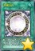 | 黑魔导阵 | [魔法|永续] 「黑魔导阵」的①②的效果1回合各能使用1次。 ①：作为这张卡的发动时的效果处理，从自己卡组上面把3张卡确认。那之中有着有「黑魔术师」的卡名记述的魔法·陷阱卡或者「黑魔术师」的场合，可以把那1张给对方观看并加入手卡。剩下的卡用喜欢的顺序回到卡组上面。 ②：自己场上有「黑魔术师」召唤·特殊召唤的场合，以对方场上1张卡为对象才能发动。那张卡除外。 |
| 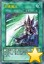 | 幻像魔法 | [魔法|速攻] 「幻像魔法」在1回合只能发动1张。 ①：把自己场上1只魔法师族怪兽解放才能发动。从自己的卡组·墓地选最多2只「黑魔术师」加入手卡。 |
| 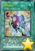 | 炼装融合 | [魔法] 「炼装融合」的②的效果1回合只能使用1次。 ①：从自己的手卡·场上把「炼装」融合怪兽卡决定的融合素材怪兽送去墓地，把那1只融合怪兽从额外卡组融合召唤。 ②：这张卡在墓地存在的场合才能发动。墓地的这张卡加入卡组洗切。那之后，自己从卡组抽1张。 |
| 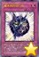 | 魔术师的导门阵 | [陷阱] ①：从手卡把1只「黑魔术师」特殊召唤。那之后，从卡组把1只7星以下的魔法师族·暗属性怪兽特殊召唤。 ②：自己场上有「黑魔术师」存在的场合，把墓地的这张卡除外，以对方场上1张表侧表示的魔法·陷阱卡为对象才能发动。那张卡的效果直到回合结束时无效。这个效果在这张卡送去墓地的回合不能发动。 |
| 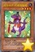 | 娱乐伙伴 机械眼蜥蜴 | [怪兽|效果] 爬虫类/地 [★4] 1600/1200 ①：这张卡召唤·特殊召唤成功的回合的自己主要阶段只有1次，从卡组把1只「异色眼」怪兽送去墓地才能发动。直到结束阶段，这张卡当作和送去墓地的怪兽同名卡使用。 |
| 黑羽-胧影之业风 | [怪兽|效果|调整] 鸟兽/暗 [★5] 0/0 这张卡不能通常召唤。自己场上没有怪兽存在的场合可以特殊召唤。 ①：这张卡从手卡的特殊召唤成功时才能发动。在自己场上把2只「胧影衍生物」（鸟兽族·暗·1星·攻/守0）特殊召唤。这衍生物不能解放，不能作为同调素材。 ②：把这张卡和除调整以外的怪兽1只以上从自己场上除外，以持有和那个等级合计相同等级的自己墓地1只「黑羽」同调怪兽为对象才能发动。那只怪兽当作调整使用特殊召唤。 | |
| 不知火的隐者 | [怪兽|效果] 不死/炎 [★4] 500/0 「不知火的隐者」的①②的效果1回合各能使用1次。 ①：把自己场上1只不死族怪兽解放才能发动。从卡组把1只守备力0的不死族调整特殊召唤。 ②：这张卡被除外的场合，以「不知火的隐者」以外的除外的1只自己的「不知火」怪兽为对象才能发动。那只怪兽特殊召唤。这个效果的发动时场上有「不知火流 转生之阵」存在的场合，这个效果的对象可以变成2只。 | |
| 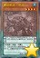 | 雾动机龙·甲龙 | [怪兽|效果|灵摆] 机械/水 [★4] 1500/2000 6/6 ←6 【灵摆】 6→ ①：只在这张卡在灵摆区域存在才有1次，可以把以这张卡以外的自己场上的「雾动机龙」卡为对象发动的效果无效。那之后，这张卡破坏。 【怪兽效果】 ①：只要这张卡在怪兽区域存在，自己的「雾动机龙」怪兽战斗破坏的怪兽除外。 |
| 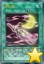 | 月光香 | [魔法] ①：以自己墓地1只「月光」怪兽为对象才能发动。那只怪兽特殊召唤。 ②：把墓地的这张卡除外，丢弃1张手卡才能发动。从卡组把1只「月光」怪兽加入手卡。 |
| 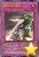 | 破坏剑的追忆 | [陷阱] ①：从手卡丢弃1张「破坏剑」卡才能发动。从卡组把1只「巴斯达·布雷达」怪兽特殊召唤。 ②：把墓地的这张卡除外才能发动。「龙破坏之剑士-巴斯达·布雷达」决定的融合素材怪兽从自己墓地除外，把那1只融合怪兽从额外卡组融合召唤。 |
| 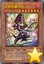 | 卡通黑魔术师 | [怪兽|效果|卡通] 魔法师/暗 [★7] 2500/2100 ①：这张卡在召唤·反转召唤·特殊召唤的回合不能攻击。 ②：自己场上有「卡通世界」存在，对方场上没有卡通怪兽存在的场合，这张卡可以直接攻击。 ③：1回合1次，可以从手卡丢弃1张「卡通」卡，从以下效果选择1个发动。 ●从卡组把「卡通黑魔术师」以外的1只卡通怪兽无视召唤条件特殊召唤。 ●从卡组把1张「卡通」魔法·陷阱卡加入手卡。 |